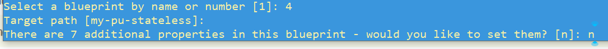
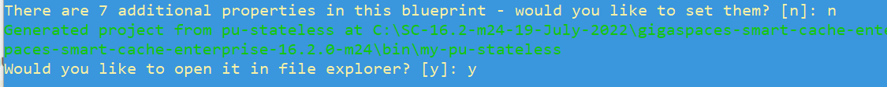

Building a Java Application
We will build a Java application from one of the built-in blueprints available in the gs.bat/sh procedure.
The blueprint we are using, option 4 in the procedure, is creating a stateless Processing Unit.
-
cdto thebinfolder and then rungs.sh(orgs.bat). -
Type
blueprint generate. This begins the configuration work flow. - A list of available blueprints is displayed. Select 4 which is the blueprint for a stateless PU.

- Choose the default target path (my-pu-state;ess) and "n" to take all of the other defaults..
 -
The project is created, and the target path is displayed. You are prompted to open the project in your default file explorer. Choose "y" to see the project tree.
-
Build the jar file – switch to the bin/my-pu-stateless directory, and enter the maven command to build the project:

Type quit to exit the gs procedure.
cd <installation directory>/bin/my-pu-stateless
mvn clean install -DskipTests
Create a Docker Image
Copy the created jar file from the target folder to the local folder.
Create a docker file named Dockerfile, with the following content:
FROM gigaspaces/xap-enterprise:
FROM gigaspaces/smart-cache-enterprise:Create a file named entrypoint.sh, with the following content:
#!/bin/bash
if [ -z "$GS_MANAGER_SERVERS" ]; then
if [ -z "$GS_PUBLIC_HOST" ]; then
export GS_MANAGER_SERVERS=$HOSTNAME
else
export GS_MANAGER_SERVERS=$GS_PUBLIC_HOST
fi
fi
/opt/gigaspaces/bin/gs.sh $*
Perform a Docker build operation, in the directory that has Dockerfile and the jar file. This will create a Docker image.
docker build -t my-pu-stateless .You might need to push the image to a remote docker registry if your cluster cannot access the local one. If you do create a remote docker registry you will need to add the name to the command to deploy the Docker image (e.g., update what is in bold: pu-jar-image.repository=my-pu-stateless)
Deploy the Docker image in GigaSpaces.
helm install custom-pu ./xap-pu/ --set manager.name=xap,
instances=1, resourceUrl=pu.jar,
livenessProbe.enabled=false,readinessProbe.enabled=false, metrics.enabled=false,
image.repository=my-pu-stateless,
image.tag=latest